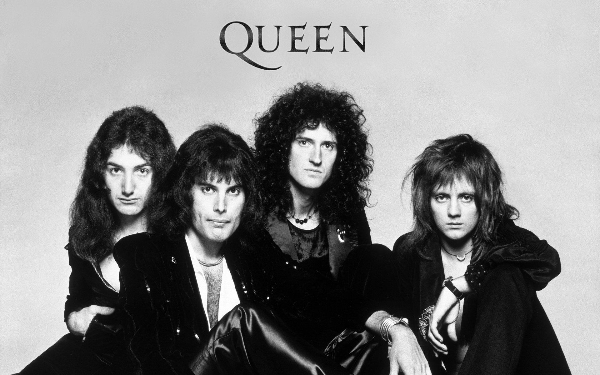

<h2>QUEEN</h2>
<p>Banda británica de rock formada en 1970 en Londres</p>


<h2>Integrantes del grupo</h2>
<li>Brian May</li>
<li>Freddie Mercury</li>
<li>John Deacon</li>
<li>Roger Taylor</li>

<h2>Discografía</h2>
<thead>Grandes éxitos de Queen</thead>
<table>
    <tr>
        <th id="titulo">Año</th>
        <th id="titulo">Disco</th>
    </tr>
    <tr>
        <td>1975</td>
        <td>A night at the opera</td>
    </tr>
    <tr>
        <td>1986</td>
        <td>A kind of magic</td>
    </tr>
    <tr>
        <td>1989</td>
        <td>The Miracle</td>
    </tr>
    <tr>
        <td colspan="2" id="album">"A kind of magic" fue el album mas exitoso</td>
    </tr>
</table>

<h2>Página web</h2>
<a href="https://www.queenonline.com">www.queenonline.com</a>